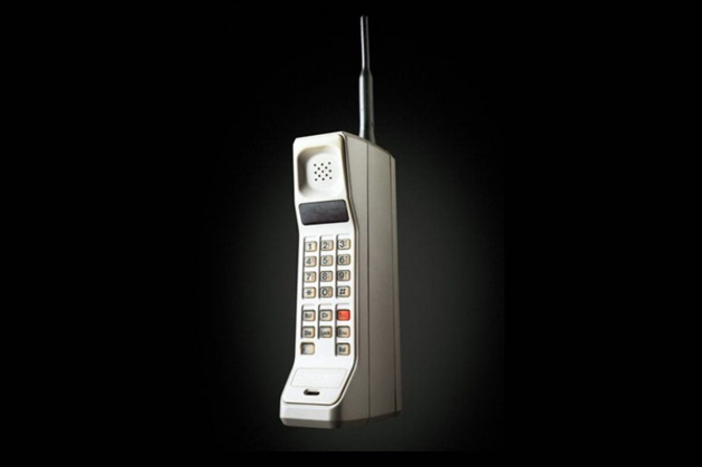
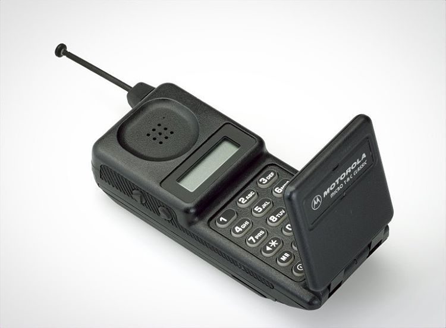
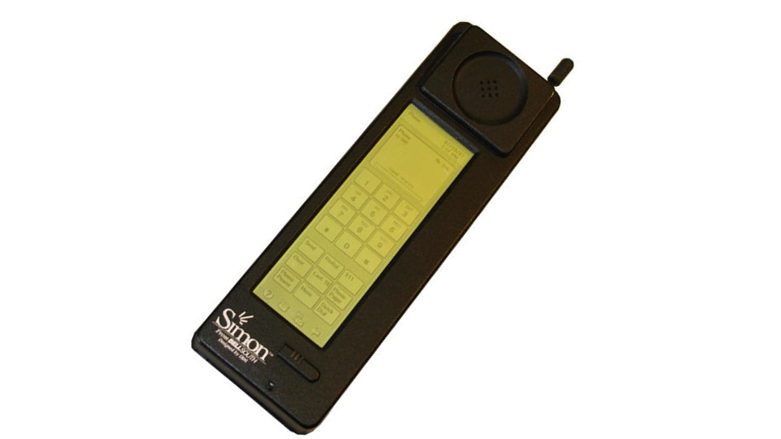

Зарождение смартфонов
Началом для смартфонов послужили кнопочные телефоны, огромные и неказистые бандуры, которые некоторые не то что в руках не держали,
а возможно вообще даже в глаза не видели! Но я просто обязан рассказать вам с чего начались телефоны вообще, и как они дошли до того
что мы видим сейчас! Поэтому устраивайтесь по удобнее мы начинаем!

Все началось в 1973 году, именно тогда был создан первый мобильный телефон!
А создал его Мартин — основатель компании Motorola, именно этот человек и именно эта компания считайте создала ваши сегодняшние
смартфоны! Вообще, смотря сейчас на компанию Motorola сложно даже подумать о том насколько большой вклад они внесли в историю,
ведь в данный момент они внизу рынка и играют уже не по своим правилам, как раньше…
Ну ближе к делу!
Приблизительно так выглядели мобильные телефоны тех времен. Представьте насколько неудобно было ходить с таким.
И с тех пор, год за годом, мобильные телефоны улучшались и привносили в себя все новые и новые технологии.
Первая в мире роскладушка - Телефон которий в ходил в класс автомобилей
В 1989 был представлен первый телефон формата раскладушки!
Да, это выглядело немного не так, как вы представляете, но это ПЕРВАЯ В МИРЕ РАСКЛАДУШКА!
Назывался телефон MicroTAC 9800X и ставился в автомобили бизнес-класса!
GSM с (2G)сетями
В 1992 году компания Nokia, которая только-только начала развиваться в мире мобильных телефонов привнесла на рынок
ПЕРВЫЙ в мире массовый телефон с GSM (2G) сетями. Представьте насколько большой это шаг, дать всему
человечеству мобильную связь — это умопомрачительно просто!
Телефон с подержкой приложений
В 1994 году вышел телефон, который принято считать первым в мире телефоном с тач-скрин экраном и поддержкой приложений.
